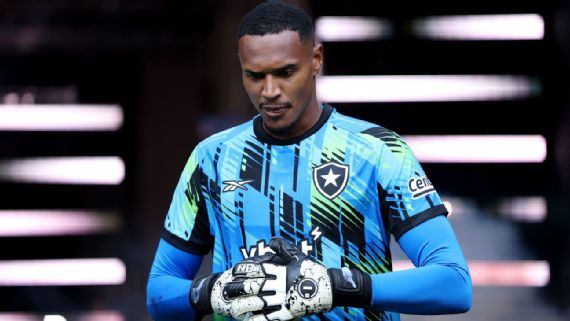

John joga responsabilidade para o PSG em duelo contra o Botafogo no Mundial: 'Sonhar nunca é fácil'

Depois de fazer o dever de casa e vencer o Seattle Sounders por 2 a 1 na estreia do Mundial de Clubes, o Botafogo enfrentará nesta quinta-feira (17) o maior desafio da temporada: o poderoso PSG.
Em entrevista exclusiva à ESPN antes do início do torneio nos Estados Unidos, o goleiro John fez questão de jogar a responsabilidade para o atual campeão da Champions League, tratado por muitos como o grande favorito ao título.
'A responsabilidade é mais para eles (PSG), que não conhecem nosso jeito de jogar. É diferente. Eles não conhecem nosso jeito de jogar e nós não conhecemos o deles. Vai ser uma mistura de futebol diferente, para os dois lados. Mas como sempre falo, é entrar para desfrutar, não só desse jogo, mas também contra o Atlético de Madrid. Entrar tranquilo, leve, dar o nosso melhor, e tenho certeza que seremos recompensados'', afirmou.
John prometeu ainda que o Botafogo vai ''guerrear'' até o fim para, quem sabe, vencer o gigante francês e avançar de fase no Mundial.
''Sonhar nunca é fácil. Não podemos escolher adversário. É um time campeão da Champions e que tem grandes jogadores, mas tenho certeza que vamos fazer o nosso melhor. Nós sempre falamos no vestiário que o Botafogo é um time de guerreiros e vamos guerrear até o último minuto, fazer o nosso melhor sempre'', finalizou.
Botafogo e PSG se enfrentam nesta quinta-feira (19), às 22h (de Brasília), no Rose Bowl. Os dois times dividem a liderança do Grupo B com três pontos. Os franceses, porém, levam a melhor no saldo de gols (4 contra 1). A outra partida do grupo será entre Atlético de Madrid e Seattle Sounders.
Onde assistir ao Mundial de Clubes?
O Mundial de Clubes terá transmissão ao vivo pela CazéTV, disponível sem custo adicional no Disney+
Próximos jogos do Botafogo:
- PSG (N) - 19/06, 22h (de Brasília) - Mundial de Clubes
- Atlético de Madrid (N) - 23/06, 16h (de Brasília) - Mundial de Clubes